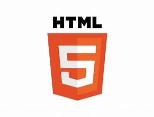
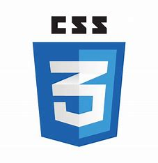

Technologies I Know

HTML

CSS
JavaScript

ReactJS
Hello, I'm
I am a passionate web developer. Welcome to My Portfolio!
I am a dedicated web developer with experience in designing and developing user-friendly websites. My journey began with a deep interest in technology, and I am persuing my education in Information Technology to hone my skills. I specialize in front-end development with a keen eye for detail and a commitment to creating seamless user experiences.
This project involved developing a stopwatch web application, you can use HTML, CSS, and JavaScript. HTML is used to structure the elements of the application. By implementing functions for starting, pausing, and resetting the stopwatch, as well as tracking and displaying lap times, users can accurately measure and record time intervals. With these technologies and functionalities, you can create an interactive and user-friendly stopwatch web application.
View on GitHubDeveloped a gamified platform that involves using HTML, CSS, and JavaScript to create an engaging user experience. By implementing game mechanics such as points, levels, and rewards, you can enhance user motivation and participation. This project can showcase your skills in creating interactive and dynamic web applications that encourage user engagement through gamification.
View on GitHubTo build a tic-tac-toe web application, you can use HTML, CSS, and JavaScript. By implementing functions to handle user clicks, track game state, and check for winning conditions, you can create an interactive and engaging tic-tac-toe game. With these technologies and functionalities, users can play against each other or against an AI opponent, aiming to get three markers in a row to win the game.
View on GitHubHTML
CSS
JavaScript
ReactJS
If you'd like to get in touch, please email me at nabhabagwan32@gmail.com or connect with me on LinkedIn.